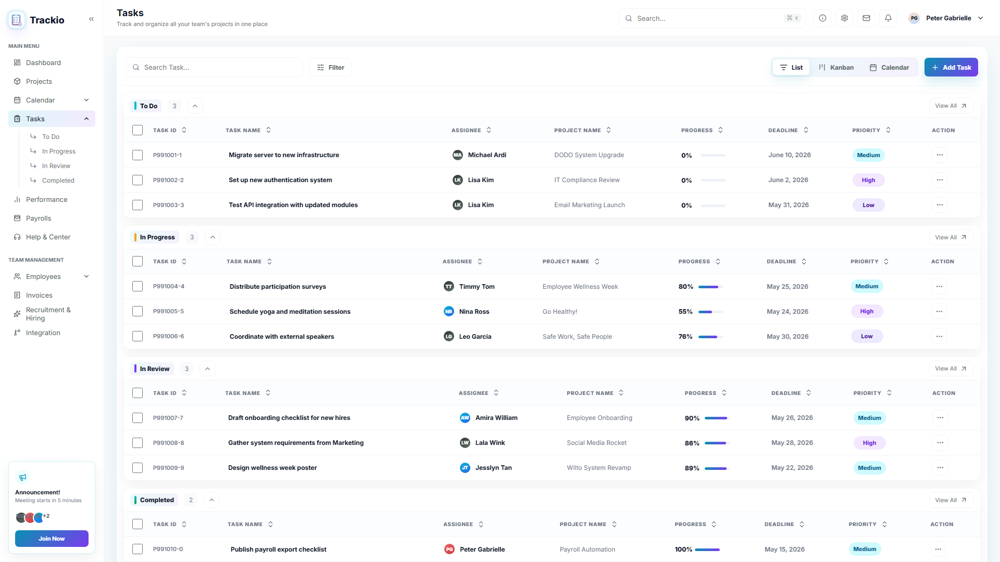
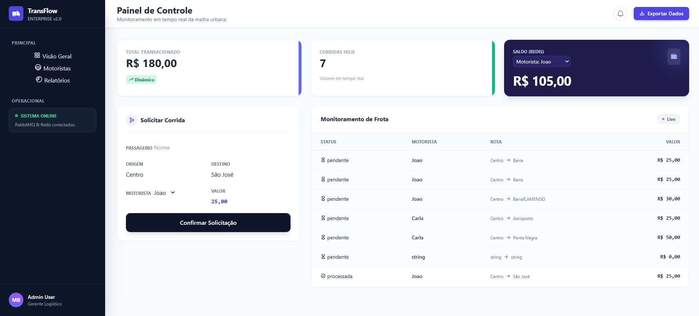
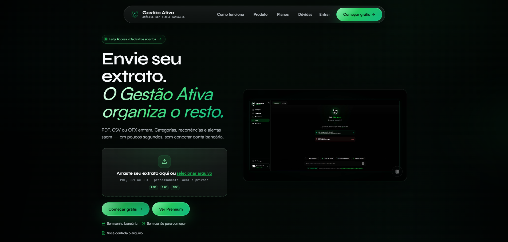
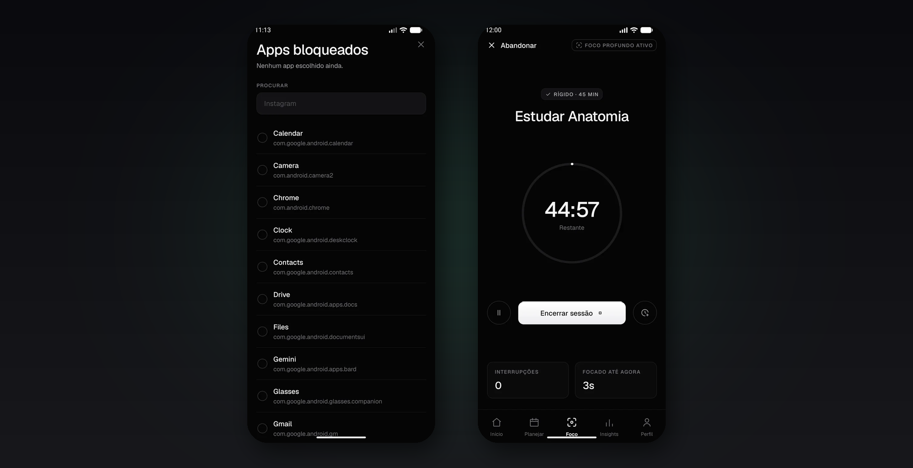
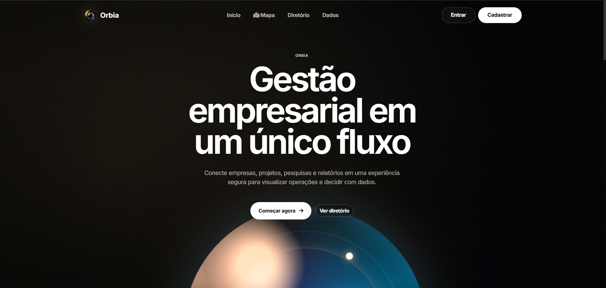
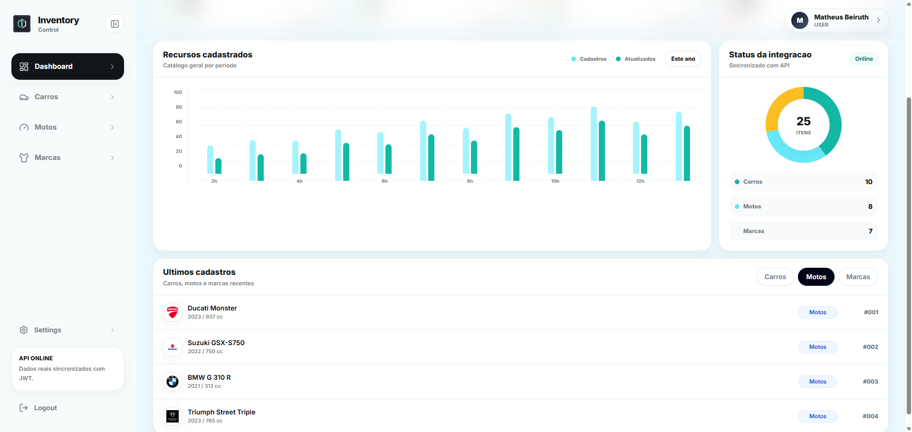
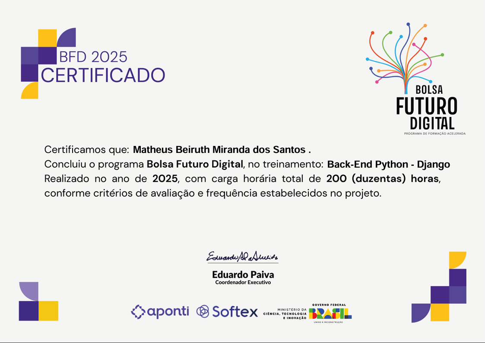
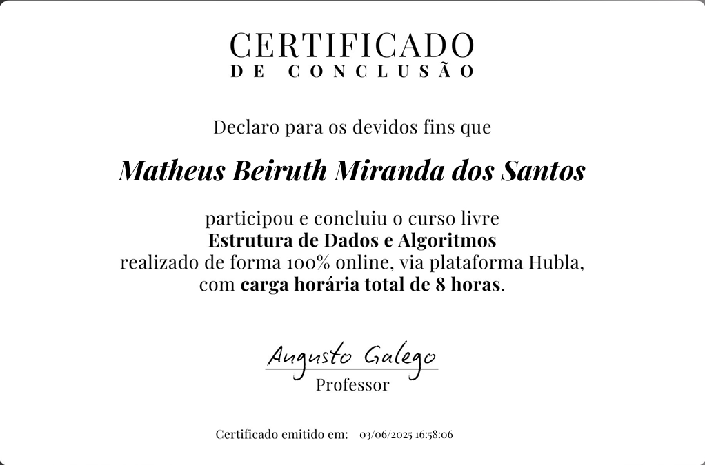
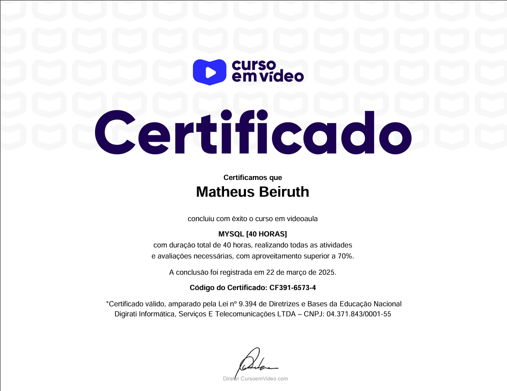

Olá, eu sou Matheus Beiruth
Desenvolvedor back-end com foco em Python.
Construo APIs, sistemas orientados a eventos e, agora, aplicações com LLM. Engenharia de Software (7º período), em busca de estágio ou vaga júnior.
Tecnologias principais
- Python
- Java
- TypeScript
- React
- Django
- Docker
Portfólio
Projetos recentes
APIs, sistemas orientados a eventos, produtos web e mobile.
Trackio

Backend · API
Trackio
API de gestão de tarefas em monólito modular (ports/adapters), com Kanban, dashboard, 55 testes automatizados, CI e deploy.
TransFlow

Backend · Eventos
TransFlow
API de mobilidade orientada a eventos: registra corridas, publica eventos no RabbitMQ e um worker atualiza o saldo no Redis de forma atômica.
Gestão Ativa

Produto · SaaS
Gestão Ativa
SaaS de finanças pessoais: lê extratos em PDF/CSV, categoriza transações e detecta despesas recorrentes. Código privado, demonstração pública.
StayOn

Mobile · Android
StayOn
App de foco e produtividade, offline e sem conta, com bloqueio de apps durante as sessões via módulo nativo em Kotlin.
Orbia

Full stack · Web
Orbia
Plataforma em Django para gestão de empresas, projetos e pesquisas, com mapas, dashboards e permissões por tipo de usuário.
express-jwt-docker-api

Full stack · API
express-jwt-docker-api
API REST de catálogo de veículos com autenticação JWT, empacotada com Docker, e um dashboard que consome os dados.
Como trabalho
Processo
Como organizo um projeto, da ideia ao código testado.
Entender o contexto
Organizo necessidades, escopo e prioridades do projeto.
Desenvolver a solução
Estruturo interfaces e funcionalidades com atenção aos detalhes.
Revisar e evoluir
Refino a experiência para manter o resultado claro e consistente.
Vamos conversar sobre uma oportunidade ou projeto?
Estou aberto para novos desafios e colaborações.
Perfil
Sobre mim
Conheça um pouco mais sobre minha formação, foco e trajetória.
Apresentação
APIs bem estruturadas, testadas e com deploy.
Estudo Engenharia de Software (7º período) e trabalho principalmente com Python e Java no back-end: APIs REST, mensageria, testes automatizados e CI. Hoje estou indo para aplicações com IA (RAG, agentes e MCP). Busco estágio ou vaga júnior.
Meu stack
Ferramentas em uso- Python
- Java
- TypeScript
- React
- Django
- PostgreSQL
- Docker
- Git
Experiência e formação
Trajetória- Desenvolvedor Full-Stack · EstágioPlataforma de comunidade digital: Supabase/PostgreSQL, controle de acesso e app React Native
- Projetos independentes de softwareAPIs, sistemas orientados a eventos, produtos web e mobile
- Onshop.dmo · Atendente Comercial e OperacionalInventário, pedidos e atendimento em e-commerce
- Prefeitura de Maricá · Apoio operacional (temporário)Apoio e supervisão operacional nos eventos de Carnaval
- Engenharia de SoftwareUniversidade de Vassouras
Formação complementar
Certificações
Registros de cursos concluídos em desenvolvimento, dados e fundamentos de programação.

Bolsa Futuro Digital · 2025
Back-End Python - Django
Treinamento concluído com carga horária de 200 horas.
Ver certificado
Hubla · 2025
Estrutura de Dados e Algoritmos
Curso livre com carga horária total de 8 horas.
Ver certificado
Dúvidas comuns
Perguntas frequentes
Informações diretas sobre o portfólio, a formação e os canais de contato.
Principalmente back-end: APIs REST, sistemas orientados a eventos com mensageria, e produtos web e mobile completos. Agora também aplicações com IA.
Python (FastAPI e Django) e Java (Spring Boot) no back-end; PostgreSQL, MongoDB, Redis e RabbitMQ para dados e mensageria; Docker e GitHub Actions para infraestrutura; React, Next.js e React Native no front e mobile.
Sim. Busco estágio ou vaga júnior em desenvolvimento back-end ou full stack.
Os projetos selecionados estão nesta página e direcionam para os respectivos repositórios no GitHub.
Você pode iniciar uma conversa pelo WhatsApp ou enviar um e-mail para matheusbeiruth10@gmail.com.
Vamos conversar
Sua próxima oportunidade merece uma experiência bem construída.
Estou disponível para conversar sobre estágio ou vaga júnior em desenvolvimento back-end ou full stack.